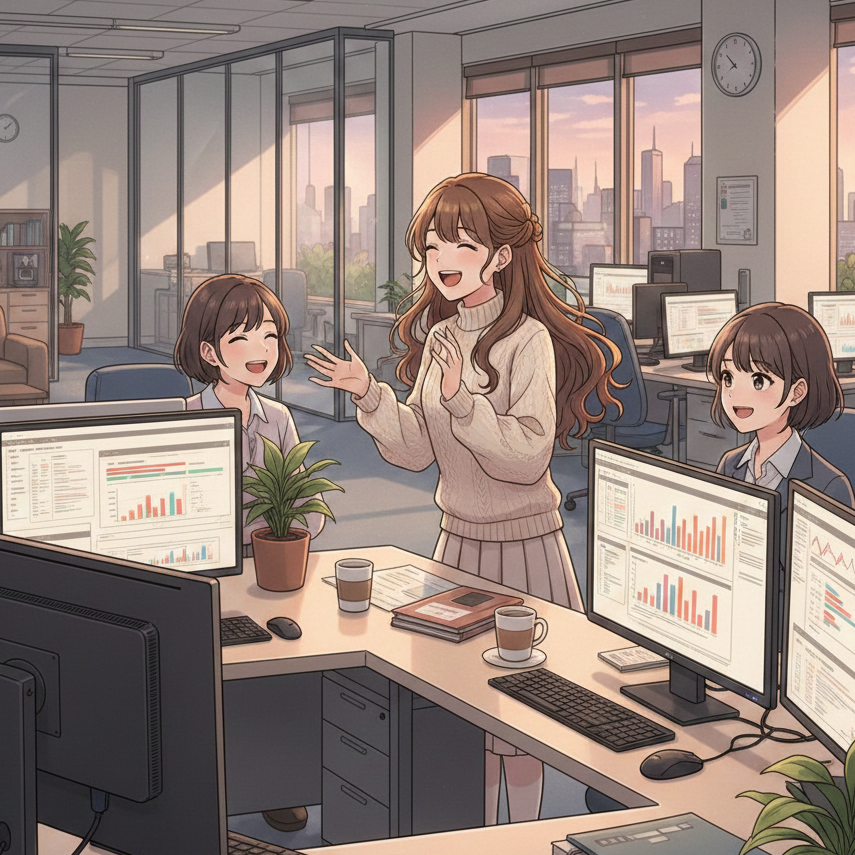
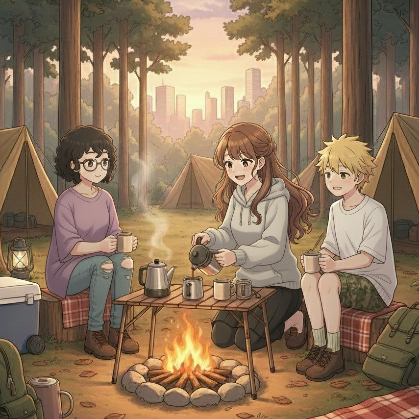

はじめに
ユーザーに寄り添いながら、想いを形にするフロントエンドエンジニア
こちらのポートフォリオを見てくださり、ありがとうございます。
私自身、自然が大好きなことから、緑色いっぱいなサイトにしてみました。
共に働かせていただくにあたり、少しでも私自身について知っていただけると良いなと思い、
プロフィールやスキル、ポートフォリオなどを作成しました。
想いを込めて、作り上げた作品たちをお届けします。
レスポンシブ設計の仕様について
PCとモバイルでアニメーション体験を分けており、
初回表示および、実際の利用シーンを優先した設計としています。
その為、DevTools上での即時切り替えでは、挙動が完全に同期しない場合があります。
レスポンシブデザインなどの確認時は、毎度ページのリロードをお願い致します。
なお、リロード後や実機での閲覧においては、想定通りの表示です。
プロフィール
ホバーすると、スライドアニメーションが止まります。 気になるテーマカードがあった際は、是非止めてみてください！

私の性格
人の笑顔を見ることが大好きです！会話しながら相手のことを知っていく過程も
好きなので、初対面でも緊張はあまりしない方です。
他人に対してはないですが、自分自身に対してだけは負けず嫌いで、
目標達成するまで自分自身と戦っています。
現在は、仲間の良さを引き出しながらプロジェクトを推進できる
フロントエンドエンジニアを目指し、日々勉強しています。

私の趣味
都会より、自然の中にいることが好きです！
森の中でコーヒーを淹れたり、
みんなでBBQをしたり、焚き火の中にお芋を入れて、
ほかほかお芋が甘くなるまでぼーっと自然の中で深呼吸をしたり。
また、森と逆に海へ魚釣りに行くことも好きです！
釣り人の方と「何が釣れていますか〜？」と話したり、
ぼーっとお魚を釣った後に、捌いてご飯を作ったり。
そんな何気ないほっこりする時間が大好きです！
気分転換方法は？？
歌うこと！一択ですね笑笑
幼い頃からミュージカルが好きで、歌うこと、踊ることが大好きです。
大学生の頃は、ゴスペルサークルに入り、博多駅で行われるイベントでは、
ハイソプラノ枠で歌っていました。
カラオケでは、Mrs. GREEN APPLEさんの曲をよく歌います！
ケセラセラや、僕のこと、ライラックなど、明るく元気な様子や、
はたまた困難な状況でもどんな自分も受け止めて、前に進む気持ちを歌った曲など、
背中を押される曲が多いことから大好きです。
診断結果：ENFJ（主人公）
私は性格診断結果、ENFJ（主人公）でした。
ENFJ（主人公）は、人の意図や感情をくみ取りながら、
チーム全体が前に進むよう働きかける特性を持つタイプです。
また、ENFJの強みであるコミュニケーション能力を活かし、
デザイナー・エンジニア・他部署の方とも
立場や知識量に合わせて伝え方を調整することを大切にしています。
相談しやすく、声をかけやすい存在であることを心がけています。
私の性格
人の笑顔を見ることが大好きです！会話しながら相手のことを知っていく過程も
好きなので、初対面でも緊張はあまりしない方です。
他人に対してはないですが、自分自身に対してだけは負けず嫌いで、
目標達成するまで自分自身と戦っています。
現在は、仲間の良さを引き出しながらプロジェクトを推進できる
フロントエンドエンジニアを目指し、日々勉強しています。
私の趣味
都会より、自然の中にいることが好きです！
森の中でコーヒーを淹れたり、
みんなでBBQをしたり、焚き火の中にお芋を入れて、
ほかほかお芋が甘くなるまでぼーっと自然の中で深呼吸をしたり。
また、森と逆に海へ魚釣りに行くことも好きです！
釣り人の方と「何が釣れていますか〜？」と話したり、
ぼーっとお魚を釣った後に、捌いてご飯を作ったり。
そんな何気ないほっこりする時間が大好きです！
気分転換方法は？？
歌うこと！一択ですね笑笑
幼い頃からミュージカルが好きで、歌うこと、踊ることが大好きです。
大学生の頃は、ゴスペルサークルに入り、博多駅で行われるイベントでは、
ハイソプラノ枠で歌っていました。
カラオケでは、Mrs. GREEN APPLEさんの曲をよく歌います！
ケセラセラや、僕のこと、ライラックなど、明るく元気な様子や、
はたまた困難な状況でもどんな自分も受け止めて、前に進む気持ちを歌った曲など、
背中を押される曲が多いことから大好きです。
診断結果：ENFJ（主人公）
私は性格診断結果、ENFJ（主人公）でした。
ENFJ（主人公）は、人の意図や感情をくみ取りながら、
チーム全体が前に進むよう働きかける特性を持つタイプです。
また、ENFJの強みであるコミュニケーション能力を活かし、
デザイナー・エンジニア・他部署の方とも
立場や知識量に合わせて伝え方を調整することを大切にしています。
相談しやすく、声をかけやすい存在であることを心がけています。
経歴
履歴書 / 職務経歴書に詳細を記載しているので、 ここでは簡単に、これまで経験してきた職務の流れをお伝えします。
グランドスタッフ
多様な顧客対応と、状況判断が求められる現場オペレーション
フロントエンドエンジニア
業務において、要件整理・設計・テスト・リリース準備 のフェーズを担当
ITコンサルタント
HR系SaaS導入に伴う業務整理・要件整理・システム支援
スキル
これまで私が使用してきた言語、フレームワーク、ライブラリ、ツール、
OSに関しては、以下にまとめております！
まだまだ知識が足りず、至らない点があるかと思いますが、
常に積極的に学びたい意欲は人一倍強いです！
★☆☆： 現在、学習中
★★☆：自分自身で調べながら対応できる
★★★：他人に教えられる
言語
HTML5
CSS3
JavaScript
TypeScript
フレームワーク・ライブラリ
backbone.js
jquery
vue.js
ツール
gitlab
github
VisualStudioCode
figma
OS
windows
mac
ポートフォリオ
作業期間：2.5ヶ月
フロントエンド
使用言語：
HTML, CSS, TypeScript
フレームワーク：Vue.js
バックエンド
使用言語：Node.js
フレームワーク：Express
DB(データベース)
Spotifyの外部APIを活用し、楽曲・アーティスト・アルバム情報を取得できる音楽アプリケーションを開発しました。
認証機能ではデータベースを利用し、既存ユーザーと新規ユーザーで遷移フローを分岐させています。
また、レスポンシブ対応を実装しており、PC・Mobile双方で最適化されたUI設計を行っています。
今後は機能拡張として、プレイリスト作成機能の実装を予定しています。
※PC版 / Mobile版の表示切替時はリロードが必要です。
デザインやUIにとても興味がある為、理解を深めたいと考え、Figmaを使用し、一から学習を進めました。
また、Spotifyの外部APIを活用するにあたり、規定ルールや注意事項を丁寧に読み込み、仕様をドキュメントに整理しながら制作を行い、
UI/UX設計ではユーザー視点を重視し、これまでグランドスタッフとして培ってきた経験を活かして、利用シーンを具体的に想定しながら仕様を考案しました。
想像力を活かして新しいアイデアを形にしていくプロセスに大きなやりがいを感じ、限られた短い時間の中での制作ではありましたが、さらに深く学びたいと強く感じました。
さいごに
ここまでポートフォリオをご覧いただき、本当にありがとうございました。
はじめに記載した通り、 このポートフォリオは「想いを形にする」ことを大切に作りました。
このサイトや作品を通して、自然や色、細かな表現が好きな自分らしさ、
私の考え方やものづくりへの姿勢が、少しでも伝わっていたら嬉しいです。
ご縁がありましたら、ぜひ一緒にものづくりができることを楽しみにしています。